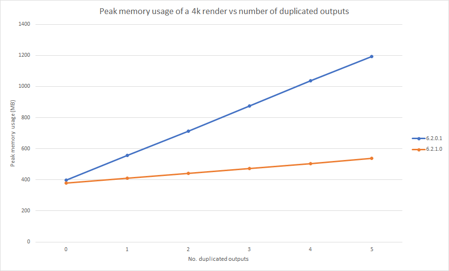
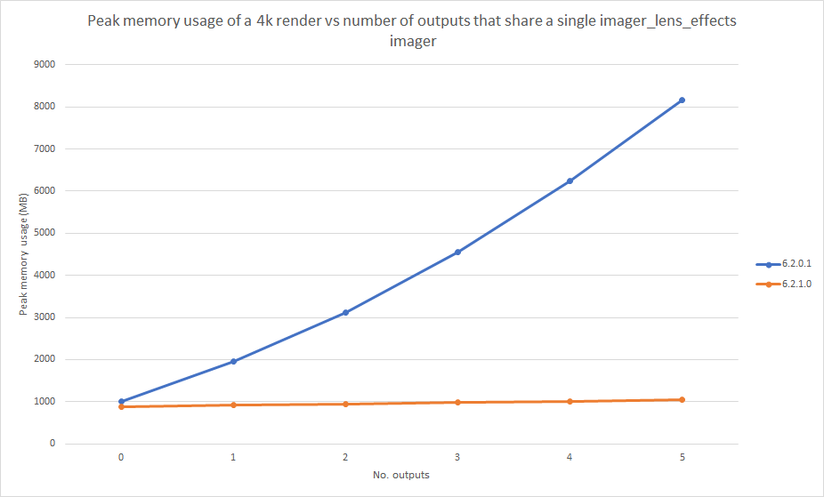
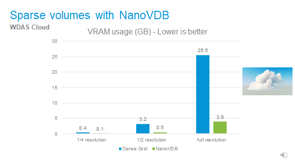
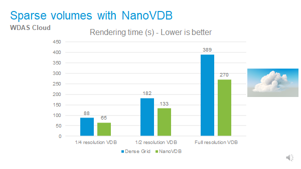
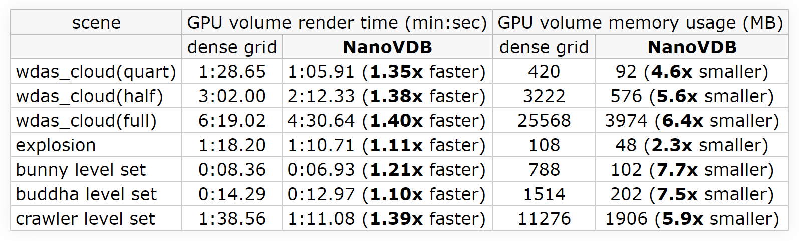
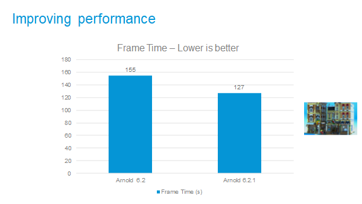
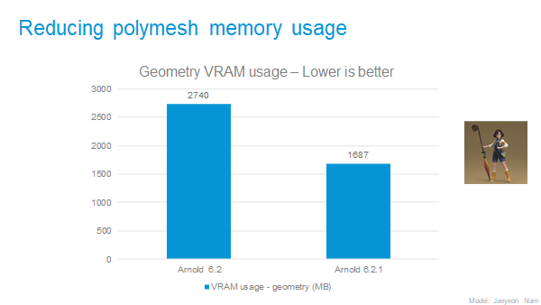

22 Apr 2021
MtoA 4.2.2 introduces Arnold 6.2.1.0 and is a performance release bringing important optimizations on GPU, toon shading, and imagers.
Maya 2019, 2020 or 2022
Windows 10 or later, with the Visual Studio 2019 redistributable.
Linux with at least glibc 2.17 and libstdc++ 4.8.5 (gcc 4.8.5). This is equivalent to RHEL/CentOS 7.
macOS 10.13 or later
CPUs need to support the SSE4.1 instruction set.
GPU rendering works on Windows and Linux only and requires an NVIDIA GPU of the Ampere, Turing, Volta, Pascal, or Maxwell architecture. We recommend using the 460.39 or higher drivers on Linux and 461.40 (Quadro), 461.40 (GeForce) , or higher on Windows. See Arnold GPU for more information.
Optix™ denoiser requires an NVidia GPU with CUDA™ Compute Capability 5.0 and above.
MtoA 4.2.2 works with the following Maya plugins
Toon shader (contour_filter) optimizations: The toon shader has been optimized, especially for Windows machines with many cores and many small buckets, wherein in some situations we've seen over a 4x speedup (core#10414, #10242).
Faster renders using progressive rendering with adaptive sampling on CPU: When using progressive rendering with adaptive sampling on the CPU, Arnold will now more quickly end the render when there is no more work left to do. For high AA_max renders this can result in noticeably faster renders (core#9022).
Faster imagers: Imagers are faster, especially on many-core Windows machines where we have seen up to a 1.7x speedup with the imager_denoiser_noice. (core#10284, 10341, 10384).
Improved output memory usage: The memory usage of outputs has been improved in a variety of cases. If a single output is sent to multiple drivers the memory is now shared, rather than duplicated (see the first graph below). The memory gains are even more substantial when imagers chains are shared between drivers. Again previously this would lead to much-duplicated memory that is now shared (see second graph below). (core#10214)

Better progress status updates for progressive renders: Progressive mode renders, which are always enabled on GPU and on CPU are enabled with options.enable_progressive_render, now have more accurate progress reports when doing adaptive sampling. They will also now report to the log an estimated time before the render completes (core#10406).
OpenImageIO upgraded: OIIO has been upgraded to version 2.3.2 (core#9705, #9481).
Adding new imagers that don't rely on dynamic AOV creation will non longer restart the render (arv#494)
Sparse volumes on GPU : VDB volumes are now loaded on GPU in a sparse form using NVIDIA's NanoVDB library. This can lead to a very significant reduction in GPU memory usage in scenes with volumes, depending on the volume sparsity, compared to the previous dense grid implementation, as shown in the table below. This also produced a speedup due to the faster skipping of empty space possible with NanoVDB. (core#9626, core#10333).
 
Faster SSS on GPU : This overall GPU optimization is most beneficial to scenes with lots for subsurface scattering, where we have observed up to 1.2x speedups (core#9917).


By default, Arnold licenses are now checked out using the host computer name . In previous Arnold versions, licenses were checked out with the name arnold.user
This means that Arnold 6.2.1.0 and an older Arnold, like 6.2.0.1, won't share a license if you render with both versions on the same time on the same machine.
To make Arnold 6.2.1 share a license with an older Arnold, set the environment variable ARNOLD _LICENSE_CLM_USERNAME to a rnold .user
**ARNOLD** **_LICENSE_CLM_USERNAME** supports the tokens **<username>** and **<hostname>** , so with Arnold 6.2.1 and later you can customize the name used to check out the license.
It could be just **<username>** , which would expand to to something like "blairs"
Or it could be something like **arnold .<username>.<hostname>** , which would expand to something like " arnold .blairs.NOVMJ07M9WM"mtoa#549 - Triplanar rotations are in radians instead of degrees
mtoa#550 - Don't Add MtoA Product metadata at plugin launch
mtoa#552 - Procedural viewport display should expand nested procs
mtoa#560 - ArnoldBifrost shape should update when the Bifrost graph is modified
mtoa#574 - Hidden procedurals trigger geometry computation for the viewport
mtoa#575 - Stand-ins stay in viewport after being hidden in Maya 2022
mtoa#576 - Crash when expanding the Arnold section of the GPUCache node
mtoa#582 - OSL code editor broken in Maya 2022
arv#408 - Upgrade OIIO in Arnold RenderView
arv#540 - Scenes with disabled imagers and multiple cameras render black on startup
arv#348 - Framing 1:1 in Arnold RenderView on MacOS centers the image incorrectly on HiDPI monitors
core#10385 [Alembic] The transform_type parameter on the alembic procedural is not applied to child nodes
core#10459 Crash in AiProceduralViewport with curves inside procedurals in bounding box mode
core#10410 Crash when rendering EXR files in append mode at high resolution using many AOVs
core#10386 Crash with single sided implicit objects
core#7562 [GPU] Crash when destroying some procedurals
core#10390 [GPU] Crash when loading empty points through a procedural
core#10422 [GPU] Crash when switching shader presets in Bifrost Graph scene
core#10478 [GPU] Crash with non-Nvidia GPUs with an old Nvidia driver installed
core#9682 [GPU] Error during render when reaching the memory limit on one GPU with NVLink
core#10431 [GPU] Incorrect result and crashes with motion blur on curves when not using the default shutter
core#10352 [GPU] Incorrect Z AOV on background
core#10328 [GPU] Overscan region is empty
core#10419 [GPU] Texture behind glass is blurred
core#10389 [GPU] Transforming procedurals in IPR does not update geometry position
core#9751 [GPU] Wrong texture mipmap selected after ray goes through a transparent object
core#10445 [Imagers] Artifacts with small filmic_shoulder_length value in imager_tonemap
core#10461 [Imagers] imager_denoiser_noice does not write alpha when using output_suffix
core#10253 [Imagers] Random crashes when interactively editing the light_mixer channels
core#10382 [Imagers] Random crash in imager_denoiser_noice when feature buffers are not of type RGB
core#10409 [MaterialX] Material assignments not working when using
core#3642 Minor memory leak (464 bytes) when starting a new render session
core#10432 [OCIO] Unable to determine chromaticities using an aces_1.2 config without an sRGB curve
core#10279 [OpenVDB] Block artifacts when VDB volumes overlap standard surface interiors
core#10106 [OSL] Incorrect results when connecting G and B components of an OSL node to another OSL node
core#10452 Rare hang with C4DToA on Linux
core#10350 Render progress is not reset after AiRenderBegin
usd#668 The render delegate does not convert HdInterpolationVarying primvars
usd#651 Error rendering Usd file with samples in productName
usd#615 Usd Writer crashes when node name contains a hyphen character
usd#683 Don't apply skinning if the Usd stage comes from the cache
usd#508 Nested procedurals ignore matrix in the viewport API
usd#687 Crash with empty primvar arrays
usd#679 Attribute subdiv_type should have priority over Usd subdivisionScheme
usd#282 Primvars are not inherited from ancestor primitives
usd#579 Subdivision settings not being passed to Usd procedural
usd#660 Crease Sets and Subdivision scheme is not imported correctly
usd#215 Issue with instanced primitives' visibility (procedural)
usd#244 Curves with vertex interpolation on width (procedural)
usd#718 Inactive render vars are still rendered when using the scene format
usd#727 Arnold does not use wrapS and wrapT values on UsdUVTexture shader node when rendering UsdPreviewSurface
usd#724 ID not passed to the shapes generated in the procedural